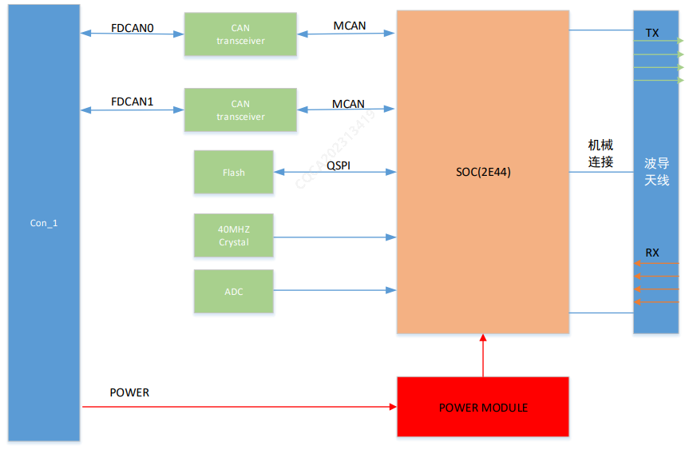

系统原理框图

前向毫米波雷达系统作为驾驶辅助功能的传感器之一，主要功能如下：
输出自车前方/侧方被雷达有效识别到的运动目标：小车、大车、二轮车、行人
输出自车前方/侧方被雷达有效识别到的静止物体目标：静止目标无类型，有障碍物通过概率，离地高度信息
输出自车前方/侧方被雷达有效识别到的静止障碍物的Freespace（可行驶边界）：如墙面、柱子、水马、锥筒、静止车辆等
输出自车前方/侧方被雷达有效识别到的金属护栏信息